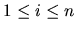
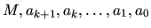

| Sum of powers |
A young schoolboy would like to calculate the sum
for some fixed natural k and different natural n. He observed that
calculating ik for
all i (
)
and summing up results is a too slow way to do it, because the number
of required arithmetical
operations increases as n increases. Fortunately, there is another
method which takes only a
constant number of operations regardless of n. It is possible to show
that the sum Sk(n) is equal to
some polynomial of degree k+1 in the variable n with rational
coefficients, i.e.,
for some integer numbers .
We require that integer M be positive and as small as possible. Under this condition the entire set of such numbers (i.e. ) will be unique for the given k. You have to write a program to find such set of coefficients to help the schoolboy make his calculations quicker.
The first line of the input contains the number of datasets, and it's followed by a blank line. There's also a blank line between datasets.
Print a blank line between datasets.
1 2
6 2 3 1 0